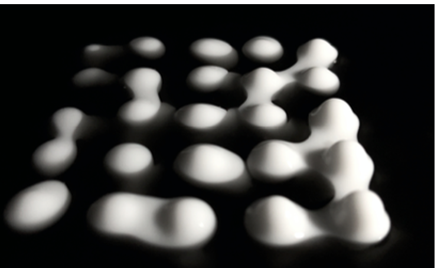
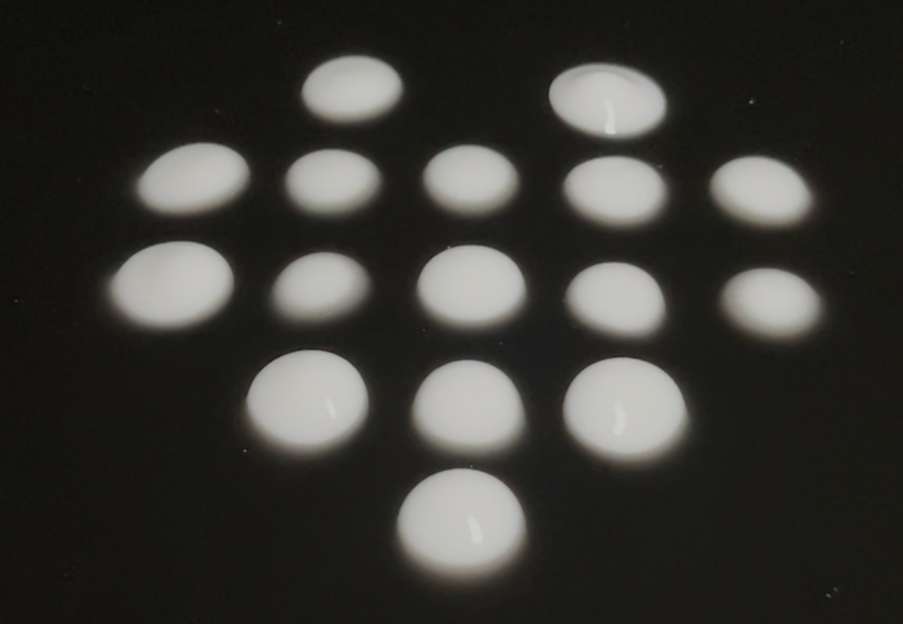
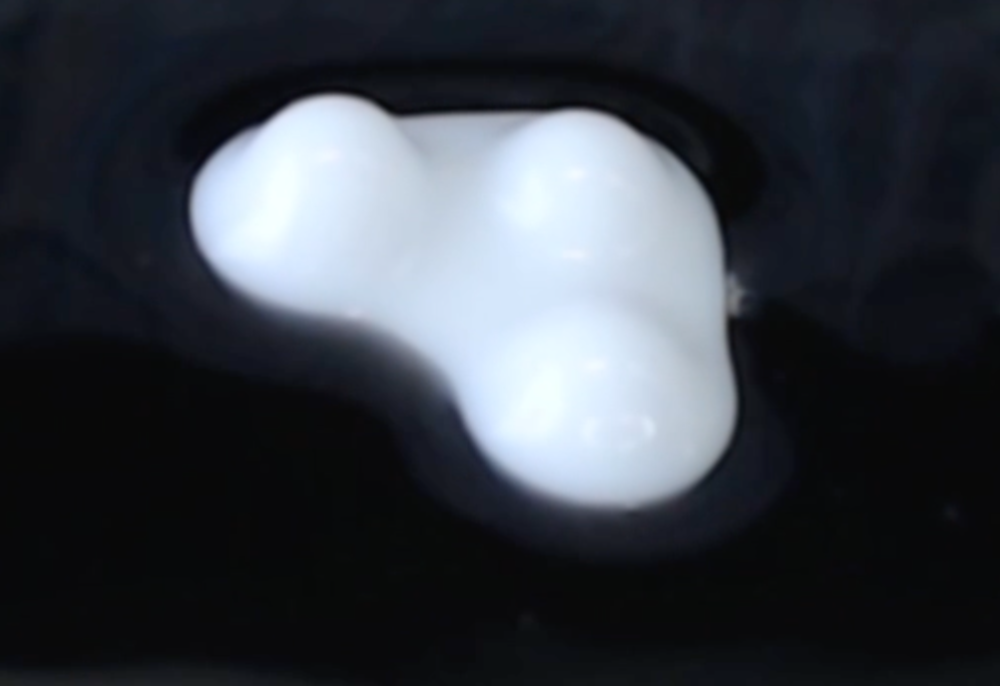
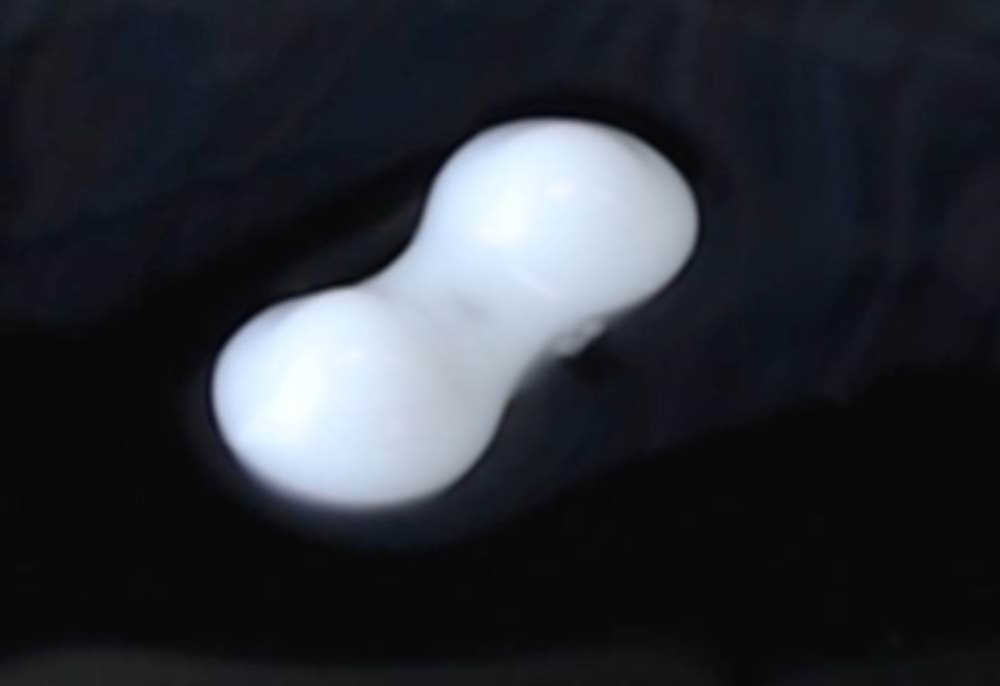
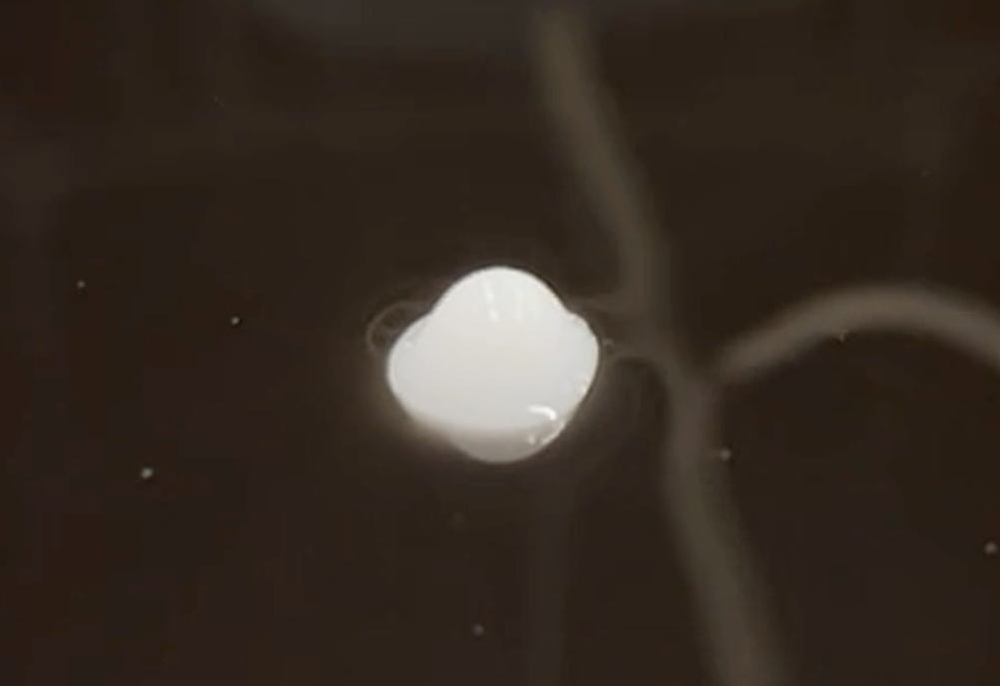

EmerFlux

- Liquid Surface Display
- Water / Oil Interface
- 11 × 11 Pixel Array
- 121 Submersible Pumps
- Physical Computing
EmerFlux is a surface-based liquid display that presents white protruding pixels using an immiscible two-layer structure composed of water and oil.
White-colored water is placed beneath black-colored oil. By locally pushing the lower water layer upward with pumps, high-contrast white pixels emerge from the black liquid surface. When pumping stops, each protrusion settles beneath the surface and smoothly disappears.
An independently controlled array of 121 submersible pumps arranged in an 11 × 11 grid displays characters, icons, and dynamic patterns directly on the liquid surface. Neighboring pixels can merge, extending the display beyond discrete points into continuous line- and surface-like forms.
The project incorporates the fluctuation and continuous morphological change inherent to liquids into information presentation, exploring a display medium in which computational control and physical behavior coexist at a liquid interface.
EmerFlux was presented as a tabletop liquid-surface exhibit at SIGGRAPH Emerging Technologies ’26, held in Los Angeles from July 19 to 23, 2026.



